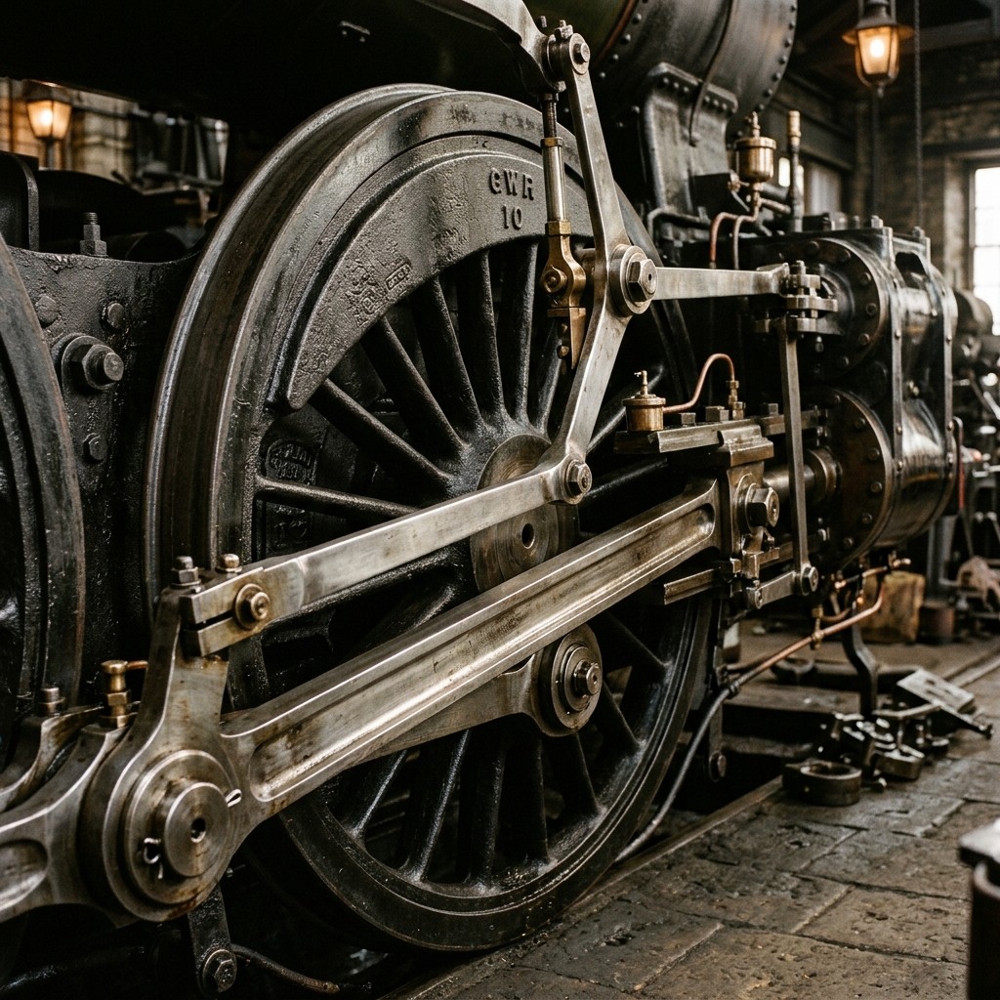

The Steam Locomotive

The "Toronto" Engine: the first steam locomotive built entirely in Canada in 1853

Detail: Cast iron driving wheels, steel pistons & brass fittings

Railway expansion across British North America, an important step in connecting North America
Did You Know?
The steam locomotive was named Toronto by the Ontario, Simcoe, and Huron Railroad to celebrate the milestone of manufacturing the first steam engine entirely in Canada. Prior to 1853, all locomotives had to be imported from Great Britain or the United States, so naming it after the city was a statement of local industrial capability and civic pride.
Tap anywhere or press space to continue